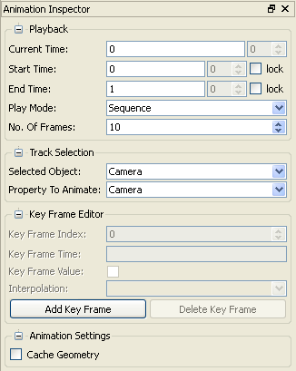
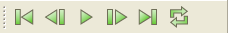
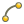

In ParaView, animation refers to changing the parameters of a reader, source, filter, or the camera (viewing position) over time. The interface provided for creating an animation is the Animation Inspector. It can be displayed by selecting Animation Inspector from the View menu.

The animation playback toolbar (View menu, Toolbars submenu, VCR Controls)
provides VCR-like buttons for moving through an animation that has already
been created. These buttons are also available in the Animation menu.
| Go to the beginning of the animation. |
| Go to the previous frame in the animation. |
| Play the animation. |
| Pause playing the animation. This button is available while an animation is playing. In addition to pausing the animation, pressing this button causes the Play button to reappear. |
| Go to the next frame in the animation. |
| Go to the end of the animation. |
| When pressed, the animation plays in a loop. To stop the looping behavior, press this button again. The animation will stop when the end of the animation is reached. |
The current time can also be changed by useing the Current Time entry box and/or spinbox in the Playback section at the top of the Animation Inspector.
The animation can be played in three modes: Sequence, Real Time, and Snap To TimeSteps. The mode can be changed by selecting the appropriate mode in the Play Mode drop-down menu. In Sequence mode, the animation is played as a sequence of images (or frames) generated one after the other rendered in immediate succession. The number of frames is controlled by the "No. Of Frames" spinbox. Note that the frames are rendered as fast as possible. Thus the viewing frame rate depends on the time needed to generate and render each frame.
In Real Time mode, the "Duration (secs)" spinbox (replacing the "No. Of Frames" spinbox) indicates the time in seconds over which the animation should run. Each frame is rendered using the current wall clock time in seconds relative to the start time. The animation runs for exactly the number of seconds specified by the "Duration (secs)" spinbox. In turn, the number of frames actually generated (or rendered) depends on the time to generate (or render) each frame.
In Snap To TimeSteps mode, the number of frames in the animation is determined by the number of time values in the dataset being animated. This is the animation mode used for ParaView's default animations: playing through the time values in a dataset one after the other. Default animations are created by ParaView when a dataset with time values is loaded; no action is required by the user to create the animation.
The Current Time for the animation ranges between the Start Time and the End Time values specified in the Playback section of the Animation Inspector. When animating datasets that contain time values, only the time values that fall in the range of the Start Time and End Time values will be part of the animation. By default, as datasets containing time values are loaded into ParaView, the Start Time and End Time values are modified so that they contain the union of all the time ranges in all the datasets loaded so far. To turn off this behavior, mark the "lock" check box beside the Start Time and/or End Time entry boxes to keep the start time and end time, respectively, from being modified when new datasets are loaded. By default, both lock check boxes are unmarked, so playing through an animation will play through all time values in all loaded datasets. This is the desired behavior in most cases.
The combination of a particular selected object (reader, source, filter, or camera) and an animateable property within that object is called a track. The user creates key frames in a track. The values of the key frames and the interpolation between key frames control how the property value is modified over time as the animation plays. The Track Selection section of the Animation Inspector provides a means to select a particular track for editing.
All created readers, sources, filters, and the camera are listed in the Selected Object drop-down menu. Once a Selected Object is chosen, all the available properties of that selected object that can be animated are listed in the Property To Animate menu. Both the Selected Object and the Property To Animate must be selected in order to edit key frames.
The Key Frame Editor section shows the properties of a key frame in the track chosen in the Track Selection section. If no key frames have yet been added in the selected track, the user interface for the Key Frame Editor section is grayed out, with the exception of the Add Key Frame button.
The Add Key Frame and Delete Key Frame buttons can be used to add or delete a key frame from the selected track. When the Add Key Frame button is pressed in a track with no key frames, two key frames are added, which default values being set for the second key frame. The first key frame can only be deleted if it is the only key frame in a particular track.
The different key frames in a given track can be selected using the Key Frame Index spinbox. The Key Frame Time entry box is used to change the time at which the key frame takes effect. When the Start Time and End Time values change, the Key Frame Time of each key frame is scaled so that the key frames fill the entire range from Start Time to End Time. The Interpolation drop-down menu controls how the value of the key frame is interpolated from one key frame to the next. Consequently, interpolation for the last key frame has no effect and is disabled. The Value controls depend on the type of the property being animated by the selected track. For example, min and or max buttons become availabe next to the Value entry box if the property being animated has min and/or max bounds defined.
When adding key frames for animating the camera (viewing position), the key frame value section provides spinboxes for specifying several different parameters of the camera. There is also a "Use Current" button below these spinboxes. Clicking this button fills the spinboxes with the associated values of the camera in the selected view. This way, it is possible to interactively choose the desired camera parameters for the key frame. To animate the camera in another view, first change to that view, and then add new key frames associated with that camera.
ParaView supports four different types of interpolation of values between key frames.
 | Linearly interpolate from one key frame value to the next. |
|  | When using Exponential interpolation, the key frame value will be interpolated from this key frame to the next one according to the specified exponential function. The Base, Start Power, and End Power must be specified; user interface controls for this appear when Exponential interpolation is chosen. The interpolation of the exponents is linear, so the interpolation from Base ^ Start Power to Base ^ End Power is exponential. |
 | The Sinusoidal interpolation type varies the value from this key frame to the next one according to the specified sine function. The Phase, Frequency, and Offset must be specified from the user interface controls that appear when Sinusoidal interpolation is selected. |
 | For Step interpolation, use the key frame value from the time this key frame takes effect until the time for the next key frame is reached. At that point, immediately use the next key frame value. |
The Cache Geometry check box (the only control in the Animation Settings section) enables/disables whether caching is to be used while playing the animation. Note that caching is only in effect when playing in Sequence mode or Snap To TimeSteps mode; it has not effect in Real Time mode. When checked, the geometry is cached and used whenever available while playing the animation. Note that if the geometry being animated is large, it will not be possible for multiple copies of the geometry (one per timestep) to be stored in memory. On the General tab of the Active View Properties tab in the Settings dialog box (Edit menu, Settings), there is a spinbox labelled "Cache Limit (in KBs)"; it specifies the maximum cache size per process to use for caching geometry for an animation. If while playing the animation, the cache size exceeds this limit, geometry caching is disabled.
Once an animation has been created in ParaView, the animataion may be saved as an AVI file or as a series of image files (JPEG, TIFF, or PNG), one image per animation frame. This functionality is available by choosing Save Animation from the File menu. When a movie file or series of images is saved, all of the views in the ParaView application window are captured. Additionally, the geometry per animation frame may be saved by selecting Save Geometry from the File menu. The data will be written out using ParaView's PVD file format.